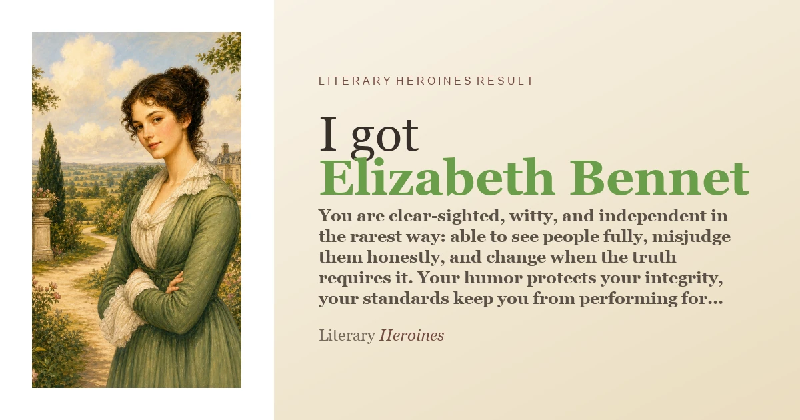

Elizabeth Bennet
You are clear-sighted, witty, and independent in the rarest way: able to see people fully, misjudge them honestly, and change when the truth requires it. Your humor protects your integrity, your standards keep you from performing for approval, and your deepest gift is not cleverness alone but the courage to revise yourself without losing yourself.
Read Elizabeth Bennet's result